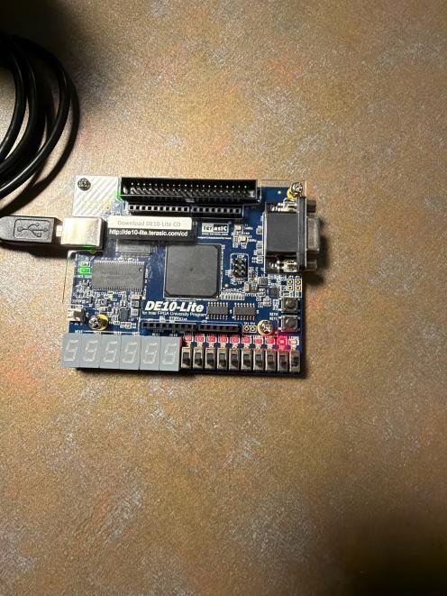
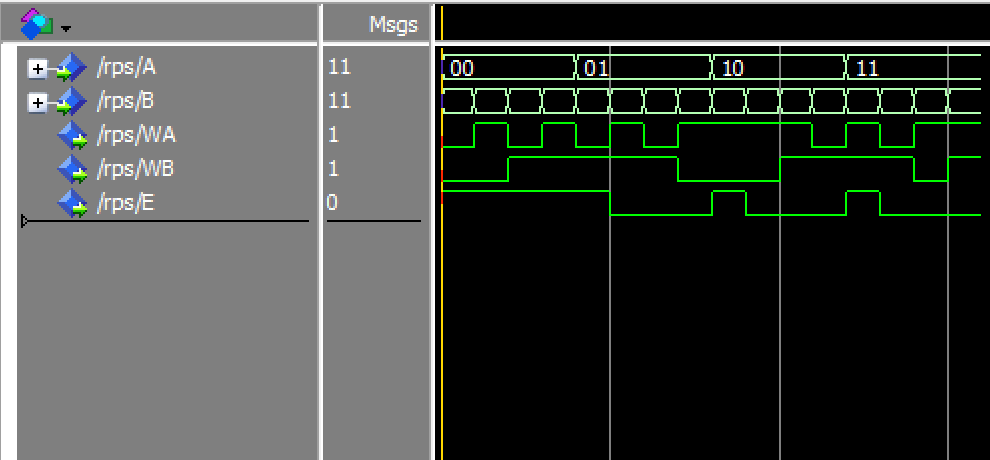
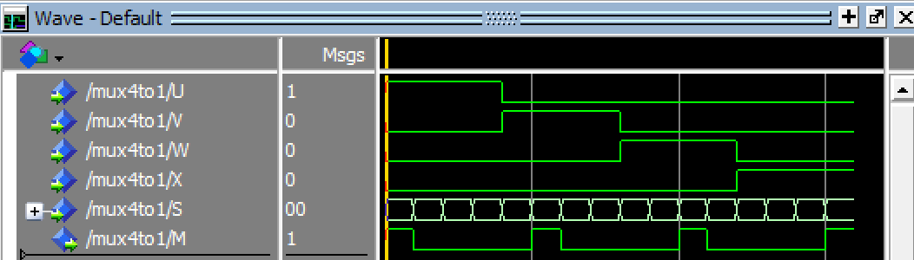
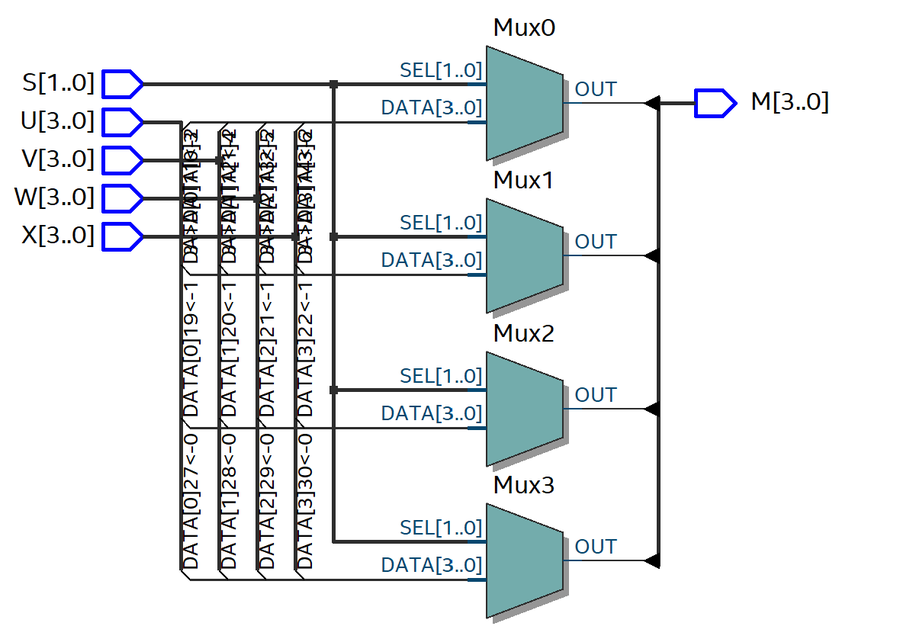

Projects / Combinational designs in VHDL
Combinational designs in VHDL
Digital Circuits and Systems, Labs 6 and 8, Oct 2026
My first designs on the FPGA: a half adder, the rock-paper-scissors judge from the discrete-logic lab rewritten in VHDL, and 4:1 multiplexers written in two different styles.
- Board
- Intel MAX 10 FPGA on a DE10-Lite board
- Tools
- VHDL, Quartus Prime, ModelSim
- Designs
- Half adder, rock-paper-scissors judge, 1-bit and 4-bit 4:1 multiplexers
- Testing
- Tcl-scripted ModelSim simulations, then the board
Workflow
Each design followed the same steps. I wrote the VHDL, then simulated it in ModelSim with a Tcl script that forces the inputs and runs the simulation for a set time. Next I assigned the FPGA's pins to the board's inputs and LEDs in Quartus's Pin Planner, compiled, programmed the board, and compared what it did with the simulation.
Half adder
A half adder adds two 1-bit inputs. The sum is a XOR b, and the carry is a AND b. I tested all four input combinations in simulation and on the board.

Rock-paper-scissors judge
I rewrote the judge from the breadboard lab in VHDL, using the same equations for WA, WB, and E as concurrent signal assignments. The simulation steps both players through all four 2-bit codes, 16 combinations in total.

4:1 multiplexer
A 4:1 multiplexer passes one of four data inputs to its output, chosen by a 2-bit select S. I wrote it with a selected signal assignment, so it is pure dataflow with no process or if statements. In the simulation, one data input is high at a time while S steps through 00, 01, 10, and 11, so the output M should be high only when S selects the high input.

Behavioral style
In Lab 8 I wrote a 4-bit-wide 4:1 multiplexer in a different style: a process with a case statement on S. Quartus synthesized it into four 4:1 multiplexers, one for each bit, as the RTL view shows. The dataflow and behavioral versions describe the same function, so they should map to equivalent hardware.
